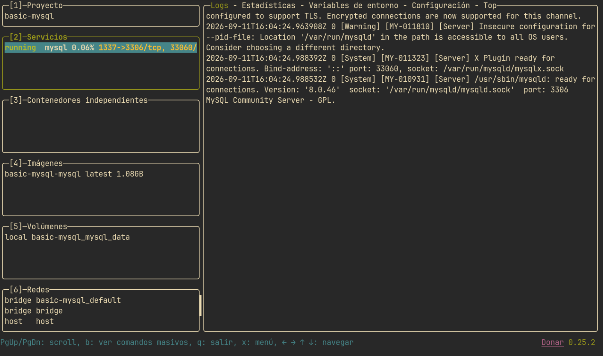
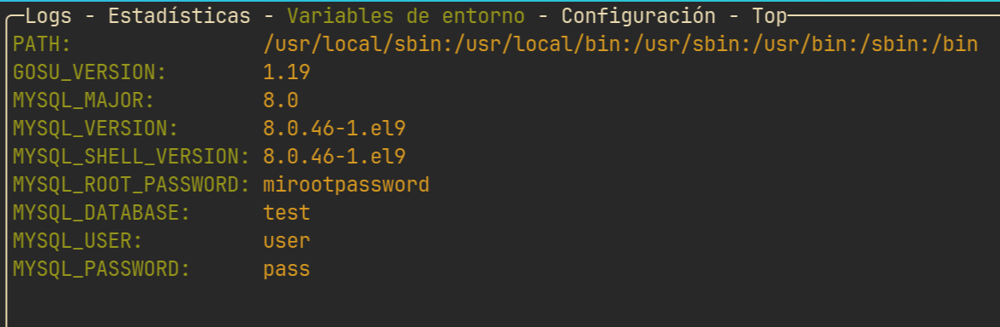

Entorno MySQL
Vamos a crear un entorno para MySQL usando Docker, este entorno podrás adaptarlo a diferentes proyectos en los que necesites una base de datos de este tipo, o podrás hacer pruebas dentro del mismo sin necesidad de instalarlo y gestionar el servicio con systemd, si en un momento quieres llevártelo a un servidor u otro dispositivo, solo tendrás que tener Docker instalado y llevarte el proyecto allí.
Estructura
Esto es lo que necesitaremos para crear nuestro entorno:
Dockerfile
Nuestro Dockerfile es este:
# Imagen oficial de MySQL
FROM mysql:8.0
# Establecer variables de entorno para MySQL
ENV MYSQL_ROOT_PASSWORD=mirootpassword
ENV MYSQL_DATABASE=test
ENV MYSQL_USER=user
ENV MYSQL_PASSWORD=pass
# Copiar el archivo schema.sql al contenedor
COPY schema.sql /docker-entrypoint-initdb.d/schema.sql
# Exponer el puerto de MySQL
EXPOSE 3306
# Comando por defecto para iniciar MySQL
CMD ["mysqld"]
Dos partes importantes de este archivo:
# Establecer variables de entorno para MySQL
ENV MYSQL_ROOT_PASSWORD=mirootpassword
ENV MYSQL_DATABASE=test
ENV MYSQL_USER=user
ENV MYSQL_PASSWORD=pass
Estas variables de entorno definen la contraseña de administrador para el servidor mysql, una base de datos que se creará durante la creación de la imagen, y un usuario con contraseña que tendrá permisos para editar esa base de datos.
Aqui copiamos el schema.sql del directorio del proyecto de docker a /docker-entrypoint-initdb.d/, este es un directorio especial de la imagen oficial de mysql en docker, ejecutará todos los archivos sql que copiemos ahi, en orden alfabético, te servirá para crear más bases de datos, usuarios, dar permisos y crear las tablas necesarias, cuando inicies tu entorno deberías tener todo lo necesario para que la aplicación funcione.
docker-compose.yml
Solo tenemos un servicio, si necesitas añadir otros, puedes expandirlo:
version: '3.8'
services:
mysql:
build: .
container_name: mysql_server
ports:
- "1337:3306"
volumes:
- mysql_data:/var/lib/mysql
- ./my.cnf:/etc/mysql/conf.d/custom.cnf
restart: unless-stopped
volumes:
mysql_data:
El servidor funcionará en el puerto 1337
my.cnf
Este archivo es genérico, te muestra diferentes opciones que puedes configurar dentro del mismo:
# ==============================
# CONFIGURACIÓN GENERAL
# ==============================
# [mysqld] -> Afecta solo al SERVIDOR MySQL (no al cliente)
# Otros grupos existentes: [client], [mysql], [mysqldump]
[mysqld]
# ---------- CONEXIONES ----------
# Número máximo de conexiones simultáneas permitidas
max_connections = 200
# Opciones alternativas de conexiones:
# bind-address = 0.0.0.0 # Permite conexiones desde cualquier IP (cuidado: inseguro)
# bind-address = 127.0.0.1 # Solo conexiones locales (más seguro)
# connect_timeout = 10 # Segundos de espera para conexión entrante
# wait_timeout = 28800 # Segundos inactivos antes de cerrar conexión (8h)
# max_user_connections = 0 # Límite por usuario (0 = sin límite)
# ---------- CARACTERES (CHARSET) ----------
# Juego de caracteres por defecto al CREAR bases nuevas
# utf8mb4 = Unicode completo (incluye emojis y 4 bytes)
character-set-server = utf8mb4
# Reglas de comparación/ordenamiento (insensitive a mayúsculas)
collation-server = utf8mb4_unicode_ci
# utf8mb4_general_ci # Más rápido pero menos preciso que unicode_ci
# utf8mb4_bin # Case-sensitive (distingue A de a)
# character-set-client-handshake = 1 # Ignora el charset del cliente
# init-connect = 'SET NAMES utf8mb4' # Fuerza charset en cada conexión
# ---------- MEMORIA / RENDIMIENTO ----------
# Cache de InnoDB (datos + índices) -> la opción que más afecta el rendimiento
# Buen tamaño: 50-70% de la RAM total en producción
innodb_buffer_pool_size = 256M
# Opciones alternativas de InnoDB:
# innodb_log_file_size = 48M # Tamaño de los redo logs (write-heavy)
# innodb_flush_log_at_trx_commit = 1 # Seguridad de datos (0 = más rápido, menos seguro)
# innodb_buffer_pool_instances = 8 # Múltiples pools para paralelismo
# table_open_cache = 2000 # Tablas abiertas en cache
# tmp_table_size = 32M # Tablas temporales en memoria
# query_cache_type = 0 # Deshabilitado en MySQL 8 (fue eliminado)
# ---------- QUERIES LENTAS (LOG) ----------
# Habilita el registro de queries lentas (1 = activo)
slow_query_log = 1
# Ruta del archivo donde se guardan las queries lentas
slow_query_log_file = /var/log/mysql/slow.log
# Tiempo límite: queries que tardan MÁS de 2 segundos entran al log
long_query_time = 2
# Opciones alternativas del log:
# slow_query_log = 0 # Desactiva el log
# log_queries_not_using_indexes = 1 # Registra queries sin índice (útil con EXPLAIN)
# min_examined_row_limit = 1000 # Solo registra si analizó >= 1000 filas
# log_output = TABLE # Guarda el log en la tabla mysql.slow_log (vista en SQL)
# ---------- LOGS GENERALES Y BINARIOS ----------
# Options adicionales útiles:
# general_log = 1 # Registra TODAS las queries (solo debug, pesado)
# general_log_file = /var/log/mysql/general.log
# log_bin = /var/log/mysql/mysql-bin # Binary log para replicación/backups (activo por defecto en MySQL 8)
# expire_logs_days = 7 # Borra binlogs después de 7 días
# ---------- SEGURIDAD / AUTENTICACIÓN ----------
# Options adicionales útiles:
# skip-networking = 1 # Desactiva conexiones TCP (solo socket local)
# require_secure_transport = 0 # 1 = obliga conexiones TLS/SSL
# secure_file_priv = /tmp # Restringe LOAD DATA INFILE a ese directorio
# enforce_gtid_consistency = ON # Replicación con GTIDs
Ajustalo según tus necesidades comentando y descomentando lo que necesites.
schema.sql
Aqui puedes poner lo que quieras, según la base de datos que necesites crear en el momento, un ejemplo minimo:
USE test;
CREATE TABLE usuarios(
id INT PRIMARY KEY AUTO_INCREMENT,
username VARCHAR(30) NOT NULL UNIQUE,
password VARCHAR(30) NOT NULL
);
INSERT INTO usuarios(username,password) VALUES
('admin', 'adminpass'),
('user0', 'user0pass');
Lanzando el entorno
Solo te quedaria abrir lazydocker en el entorno que has preparado y activar el servicio mysql, verás en la sección de servicios en que puerto está funcionando, y en el log si arrancó correctamente:

La sección de Variables de entorno es útil si no recuerdas que usuario/contraseña pusiste por defecto en el servicio:

Puedes conectar al servicio de mysql con las credenciales que hayas configurado:
~
❯ mycli -u user -P 1337 -p
Enter password for user:
MySQL
mycli 1.66.0
Home: https://mycli.net
Bug tracker: https://github.com/dbcli/mycli/issues
Thanks to the contributor — caitinggui
MySQL user@localhost:(none)> show databases;
+--------------------+
| Database |
+--------------------+
| information_schema |
| performance_schema |
| test |
+--------------------+
3 rows in set
Time: 0.007s
MySQL user@localhost:(none)> use test;
You are now connected to database "test" as user "user"
Time: 0.002s
MySQL user@localhost:test> select * from usuarios;
+----+----------+-----------+
| id | username | password |
+----+----------+-----------+
| 1 | admin | adminpass |
| 2 | user0 | user0pass |
+----+----------+-----------+